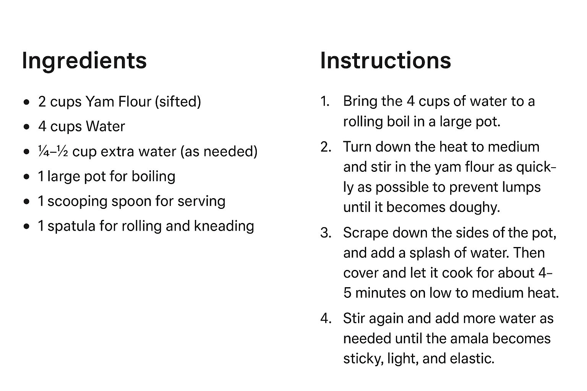
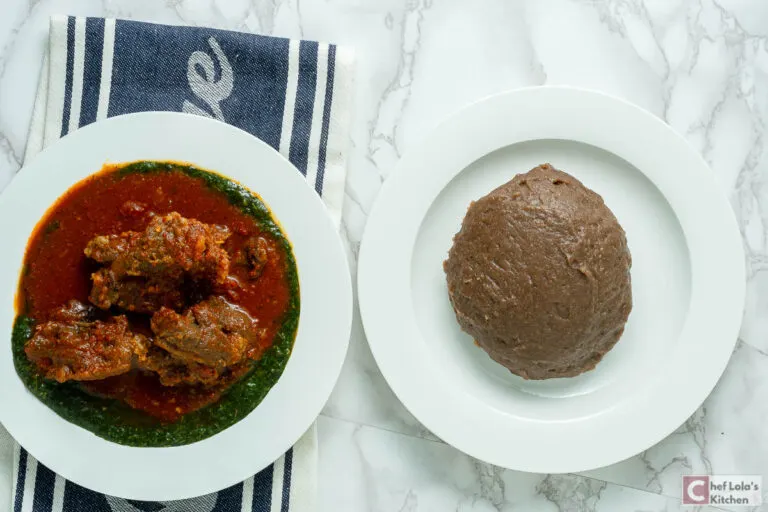

Recipe Information
Preparation time: 5 minutes
Cooking time: 10 minutes
Number of servings: 4 people
Difficulty level: Beginner
Ingredients
- 2 cups Yam Flour (sifted)
- 4 cups Water
- ¼-½ cup extra water (as needed)
- 1 large pot for boiling
- 1 scooping spoon for serving
- 1 spatula for rolling and kneading
Instructions
- Bring the 4 cups of water to a rolling boil in a large pot.
- Turn down the heat to medium and stir in the yam flour as quickly as possible to prevent lumps until it becomes doughy.
- Scrape down the sides of the pot, and add a splash of water. Then cover and let it cook for about 4-5 minutes on low to medium heat.
- Stir again and add more water as needed until the amala becomes sticky, light, and elastic.
- Serve with your choice of soup or stew such as Ewedu, Egusi Soup, Ogbono Soup, Banga soup, Okro soup, or Efo riro.
Grapical Representation

Tips
While making it, you must keep rolling the amala consistently to get a smooth and lump-free dough. The water added to the yam flour should be moderate. If the water is too much, you can add more flour. On the other hand, if the flour is too much, add more hot water. Amala is best served hot and is perishable, so you can't keep it for more than 5 hours at warm temperature.
Finished Dish

Nutrition Facts
Per serving: Calories: 227.5kcal | Carbohydrates: 47.7g | Protein: 6.5g | Fat: 0.6g | Saturated Fat: 0.1g | Polyunsaturated Fat: 0.3g | Monounsaturated Fat: 0.1g | Sodium: 13.8mg | Potassium: 66.9mg | Fiber: 1.7g | Sugar: 0.2g | Vitamin A: 1.3IU | Calcium: 16.9mg | Iron: 2.9mg
Recipe Source
This Amala recipe is from Chef Lola's Kitchen, a trusted source for traditional African and Nigerian cuisine.